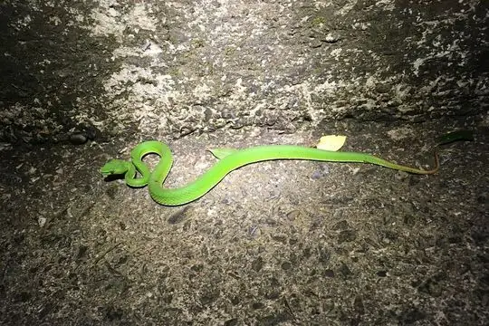
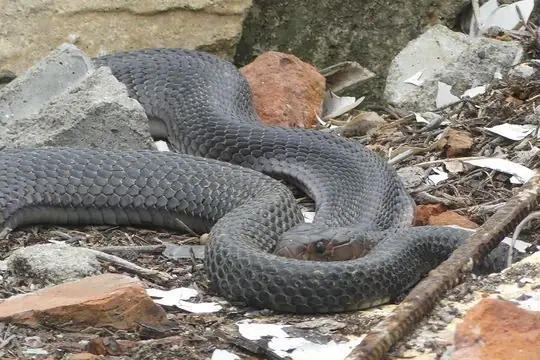
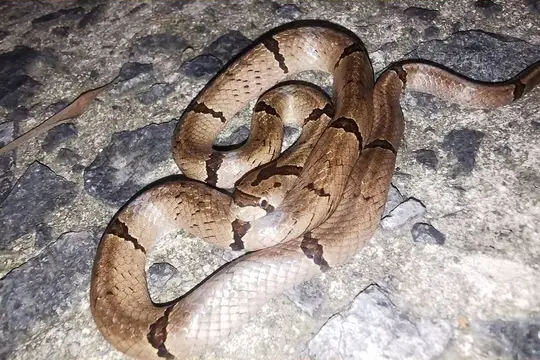

Snakes of Ninh Bình
A state or province of Vietnam
13 snake species are recorded in Ninh Bình, a state or province of Vietnam, in SnakeList: 3 venomous and 10 non-venomous, from 8 families.
- 13species
- 3venomous
- 10non-venomous
- 8families
- 1found only here
SnakeList records where snakes live by country and by state or province, not by exact spot, so a species listed here may live in only part of Ninh Bình. All snakes of Vietnam.
Most widely recorded
The species here that have research-grade iNaturalist records in the most places across their whole range - not just in Ninh Bình. That shows how often people have photographed them, not how many live here.
 Asian Vine SnakeAhaetulla prasina
Asian Vine SnakeAhaetulla prasina Common Mock ViperPsammodynastes pulverulentus
Common Mock ViperPsammodynastes pulverulentus
Chinese Green Tree ViperTrimeresurus stejnegeri Burmese PythonPython bivittatus
Burmese PythonPython bivittatus
Chinese CobraNaja atra White-lipped PitviperTrimeresurus albolabris
White-lipped PitviperTrimeresurus albolabris Formosa Slug SnakePareas formosensis
Formosa Slug SnakePareas formosensis
Chinese Kukri SnakeOligodon chinensis
Snake families
Venomous and non-venomous
Venomous: 3Non-venomous: 10
4 are listed by SnakeList as dangerous to people: Burmese Python Python bivittatus, Chinese Cobra Naja atra, Chinese Green Tree Viper Trimeresurus stejnegeri, White-lipped Pitviper Trimeresurus albolabris.
Found only here
Recorded in no other state or province or country in SnakeList’s data. That may mean it lives only here, but it can also mean it has not been recorded elsewhere yet.
- Trang An Burrowing Snake Achalinus tranganensis
Habitats (rough estimate)
How many of its living snakes have each kind of habitat in SnakeList’s estimate. That estimate comes from every country, state and province where each snake is recorded - not from a survey of Ninh Bình, and not checked species by species.
Who described them
The scientists who first described its most widely recorded snakes, and when.
- Asian Vine Snake Ahaetulla prasina -
- Common Mock Viper Psammodynastes pulverulentus -
- Chinese Green Tree Viper Trimeresurus stejnegeri -
- Burmese Python Python bivittatus - described by Kuhl in 1820
- Chinese Cobra Naja atra -
- White-lipped Pitviper Trimeresurus albolabris -
- Formosa Slug Snake Pareas formosensis -
- Chinese Kukri Snake Oligodon chinensis -
Names and dates come from SnakeList’s reviewed species accounts; the others are looked up on Wikidata (CC0) when this page opens.
Neighbouring states and provinces
Places in SnakeList that share a border with Ninh Bình.
All 13 species
- Asian Vine Snake Ahaetulla prasina
- Burmese Python Python bivittatus
- Chinese Cobra Naja atra venomous
- Chinese Green Tree Viper Trimeresurus stejnegeri venomous
- Chinese Kukri Snake Oligodon chinensis
- Chinese Mud Snake Myrrophis chinensis
- Common Mock Viper Psammodynastes pulverulentus
- Formosa Slug Snake Pareas formosensis
- Many-banded Green Snake Ptyas multicincta
- Nagao Kukri Snake Oligodon nagao
- Nganson Bronzeback Dendrelaphis ngansonensis
- Trang An Burrowing Snake Achalinus tranganensis
- White-lipped Pitviper Trimeresurus albolabris venomous
No snake here matches that.